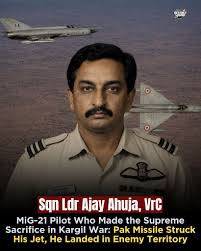
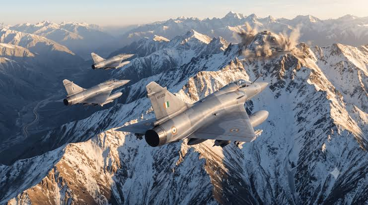
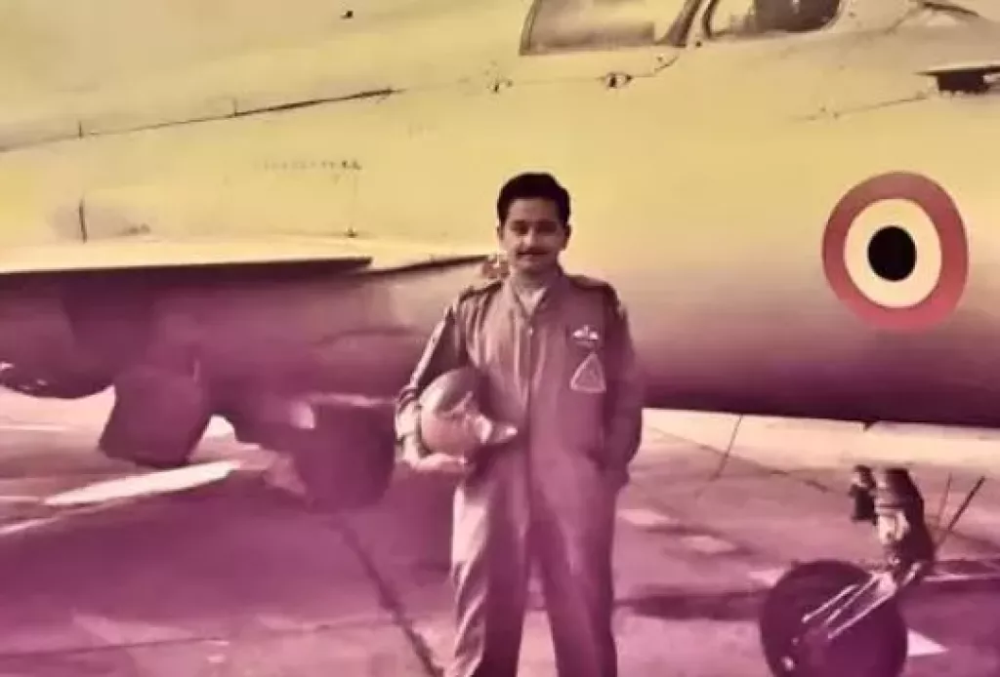
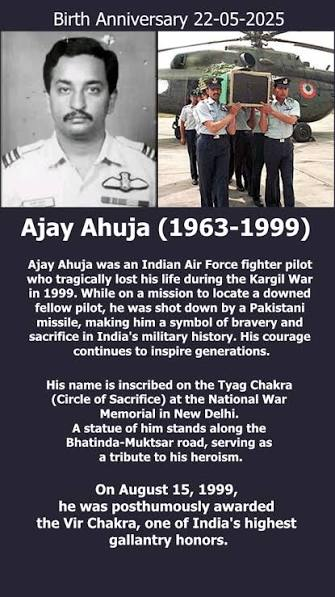

Squadron Leader · Indian Air Force · 1985–1999
Ajay AhujaVir Chakra
He stayed over the ridge to look for a downed pilot, and did not come back.
Photo: IAF MiG-21 · Wikimedia Commons (CC BY-SA)
Squadron Leader · Indian Air Force · 1985–1999
He stayed over the ridge to look for a downed pilot, and did not come back.
Photo: IAF MiG-21 · Wikimedia Commons (CC BY-SA)
Ajay Ahuja was born in Kota, Rajasthan, on 22 May 1963. He went through the National Defence Academy and was commissioned into the Indian Air Force as a fighter pilot in June 1985 — a career that would last fourteen years almost to the week.
Those years were spent on Soviet-designed metal. He flew the MiG-23 fighter-bomber and several MiG-21 variants, moving between the demands of air defence, ground attack and reconnaissance. Pilots who fly these aircraft describe them as unforgiving: short-winged, fast, with very little margin for a slow decision. Ahuja became known as someone who handled them well and did not make noise about it.
Between 1996 and 1998 he was posted as a flying instructor at Air Force Station Tambaram, where he trained young pilots coming into the fighter stream. By 1999 he had logged more than a thousand hours, a large share of it as an instructor. Colleagues remembered him as patient and cheerful — the kind of officer junior pilots went to when they had got something wrong and needed to be told so without being crushed.
He was married to Alka Ahuja and had a son, Ankur. The story his family tells is that he called Alka his second wife, because the Air Force had got there first. By May 1999 he was the Flight Commander of No. 17 Squadron, the Golden Arrows, and the squadron was moving to Srinagar.



In the winter of 1998–99, troops crossed the Line of Control and occupied high, lightly-held positions above the Srinagar–Leh highway in the Kargil, Dras and Batalik sectors. The posts had been vacated for the winter, as they were most years.
The intrusion was reported on 3 May 1999 by local shepherds in the Batalik sector and confirmed by the Indian Army two days later. India launched Operation Vijay on 10 May to clear the heights. On 26 May the Indian Air Force joined with Operation Safed Sagar — “White Sea” — flying strike and reconnaissance missions at altitudes and in terrain that no air force had fought in before.
The fighting lasted until late July. Tololing was retaken on 13 June and Tiger Hill on 4 July; withdrawal began on 11 July, and the conflict formally ended on 26 July 1999. It remains one of the very few conventional wars fought between two declared nuclear-armed states, and both countries paid heavily for it in young lives.

On the second day of air operations, Ahuja was flying a photo-reconnaissance mission in the Kargil sector. Another aircraft in the package, a MiG-27L flown by Flight Lieutenant K. Nachiketa, suffered an engine flame-out and Nachiketa ejected over territory held by the other side.
Ahuja stayed in the area to fix Nachiketa's position for a rescue attempt. He knew what was on those ridges — shoulder-fired surface-to-air missiles had already been used that week — and staying meant flying a slow, repetitive search pattern inside their reach. He kept flying it. His MiG-21MF was hit by a Stinger missile and he ejected.
What happened after he came down is disputed. India's position, based on a post-mortem that reported gunshot wounds, was that he was captured alive and then killed, which it described as a violation of the Geneva Conventions. Pakistan rejected that account and maintained he had died as a result of the fighting. His body was returned to India the following day. He was 36, five days past his birthday, and was the first Indian Air Force officer to die in the Kargil conflict.
Nachiketa was captured and held as a prisoner of war, and was repatriated in June 1999. He survived.
Fourteen years of service, set against the eighty-five days of the conflict that ended it.
He knew the missiles were there. He stayed anyway.
The substance of the Vir Chakra citation, which records that Squadron Leader Ahuja remained over enemy positions to assist rescue efforts in full knowledge of the surface-to-air missile threat in the area.
A neighbourhood in Kota was renamed Ajay Ahuja Nagar. His name is on the Kargil War Memorial at Dras, along with the others from that summer. Every 27 May, the Air Force flies the formation with the gap in it.
No. 17 Squadron, the unit he served as Flight Commander, was later re-raised as the Indian Air Force's first Rafale squadron.
A residential neighbourhood in his home town of Kota, Rajasthan, renamed in his honour.
His mission has been dramatised repeatedly, most recently in the series Operation Safed Sagar, with Siddharth in the role.